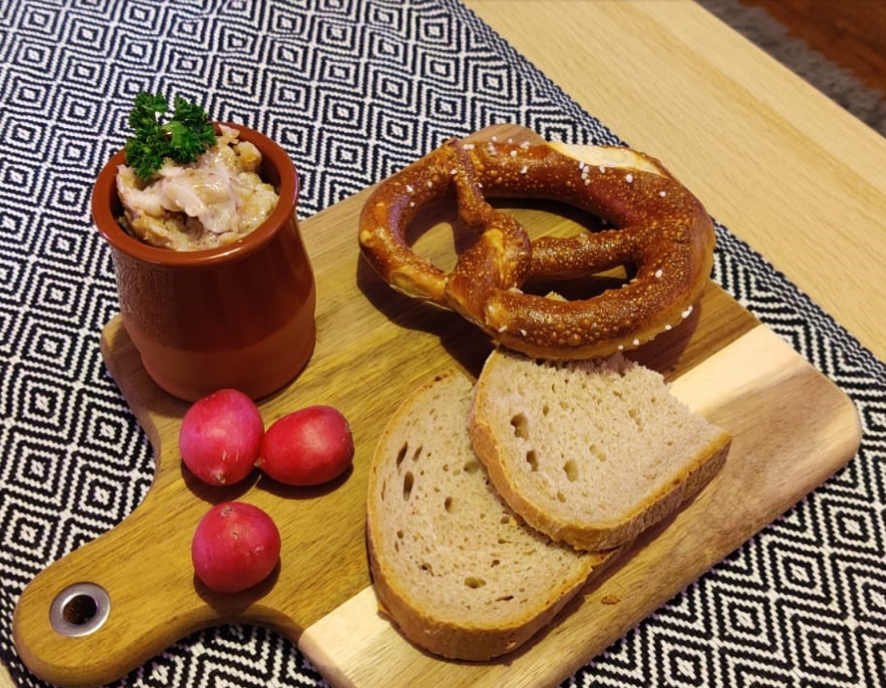

Griebenschmalz

Rendered pork fat with cracklings
A delicious bread spread
Ingredients
- 500g pork fat trimmings
- 2 onions
- Large pot with high sides (do not use a nonstick pan
- Optional: 100g non-smoked bacon rashers
- Optional: Salt
Steps
- Cut fat trimmings as small as possible or blend them
- Chop peeled onions and the rashers
- Place fat, rashers and onions in a large pot with high sides over low to medium heat
- Hat and stir occasionally until the trimmings start to melt, continue until the peaces turn into brown crackling, 1 hour or more
- You can add salt now if you wish, otherwise can also be salted when it is spread on the bread